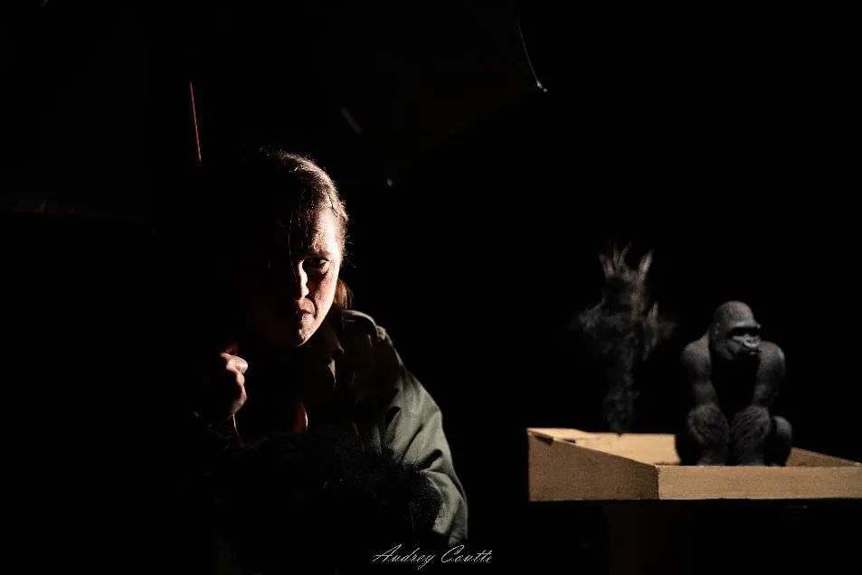
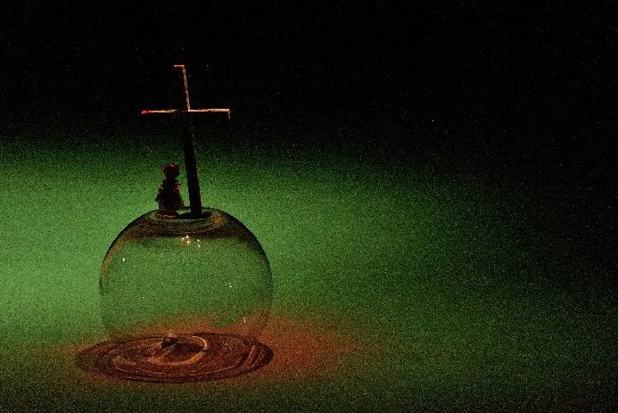
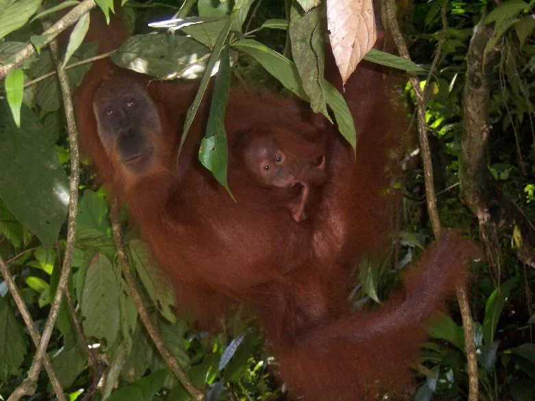

« Le théâtre d'objets a ce pouvoir de parler à l'âme d'enfant présente en chacun de nous. »
Portrait d'Audrey Boudon par Cristina Marino.
Lire l'article →
d'après Gorilles dans la brume, de Dian Fossey
Un spectacle de et avec Audrey Boudon
Compagnie Maniaka Théâtre

Nouveau ! Tant pis pour King Kong ! prend l'air : le spectacle existe désormais en version extérieure.
En savoir plus →Enfant solitaire, Dian rêve de vivre entourée d'animaux sauvages. Devenue adulte, lors d'un voyage en Afrique, elle tombe « amoureuse » des gorilles de montagne et se fait engager pour les étudier.
Elle découvre des êtres timides, doux et pacifiques, loin de l'image monstrueuse véhiculée à leur propos. Parmi eux, Digit se montre curieux des humains : un lien fort et particulier se noue entre eux. Mais la menace rôde. Dian réalise vite que « ses » gorilles sont en danger et se lance dans un combat sans merci pour les protéger. Précurseuse et activiste de leur préservation, elle se fait de nombreux ennemis…
Inspiré de la vie de Dian Fossey, célèbre primatologue qui vécut dix-huit ans auprès des gorilles de montagne au Rwanda, Tant pis pour King Kong ! raconte l'histoire d'amitié entre une femme et des gorilles. Une pièce visuelle, qui laisse aussi une belle place à l'oralité.

Un titre en pied de nez à l'image monstrueuse des gorilles, avant que Dian ne les montre au monde : sauvages et puissants, mais sensibles, pacifiques et capables d'une grande douceur.
Quand un enfant perd son animal de compagnie, on entend souvent les adultes lui dire : « C'est pas grave, c'est qu'un chien, un chat, un poisson rouge… » Pourquoi a-t-on, à ce point, besoin d'opposer les êtres vivants entre eux ?
La pièce soulève des questions éthiques, philosophiques, politiques, sociales et environnementales toujours actuelles. Elle s'intéresse à notre rapport aux (autres) animaux, questionne l'équilibre fragile entre activité humaine et vie sauvage, et interroge les limites de la préservation animale.
Dian (enfant) — Muummmm ! Fisher is dead !
Mère — Oh, come on ! Fisher is just a fish !
Dian (enfant) — Non, c'est pas juste un poisson, c'est Fisher ! Pourquoi on dit toujours ça ? […] Toi et moi Fisher, on vient tous les deux de la même petite cellule. On est juste une branche de l'arbre… Au revoir Fisher…
Extrait de Tant pis pour King Kong !






Une comédienne, des objets, et toute une forêt à 3 000 mètres d'altitude.
Bibelots, photos noir et blanc, paire de jumelles, jouets d'enfant, figurines, maisonnettes en papier, mais aussi terre, branches et feuillages : l'objet n'est pas un accessoire, il porte une mémoire et des émotions. Plan large, zoom, flash-back : le spectacle emprunte au langage du cinéma et joue des échelles.
Seule en scène, Audrey Boudon fait vivre Dian Fossey, ses parents, son aide de camp Sanweke, un marchand sans vergogne, Digit… et une narratrice qui pose sur Dian un regard tantôt admiratif, tantôt critique.
Un théâtre visuel où un arbre miniature devient une forêt, une figurine un gorille de 200 kilos, et clins d'œil au film Gorilles dans la brume.
Une forêt de modules en bois, chacun un espace-temps de la vie de Dian : de son enfance à San Francisco à sa cabane dans les montagnes africaines.
Brumes, orages, rais de lumière et obscurité forestière : des clairs-obscurs qui ressemblent autant à la forêt qu'au caractère de Dian.
Une création originale de Solo Gomez, voix et basse, mêlée aux sons de la jungle : oiseaux, cris de gorilles, pluie, chants de fête.

La vidéo est hébergée sur YouTube et ne se charge que si vous cliquez.
« Le théâtre d'objets a ce pouvoir de parler à l'âme d'enfant présente en chacun de nous. »
Portrait d'Audrey Boudon par Cristina Marino.
Lire l'article →« Petits et grands ne rentreront assurément pas insensibles de ce voyage. »
« Une création originale et réussie », à propos de la représentation au Petit Théâtre de Templeuve.
De nouvelles dates arrivent bientôt. Contactez-nous pour accueillir le spectacle !
D'autres dates sont en préparation en Dordogne (24), en Ille-et-Vilaine (35) et dans le Pas-de-Calais (62). À suivre…
La Chaufferie Huet, La Madeleine (59) · Château de Mollack, Marquise (62) · Tournée avec le PIVO, Pôle itinérant en Val-d'Oise : Vauréal, Deuil-la-Barre, Ezanville, Hodent (95) · Centre Arc en Ciel, Liévin (62) · Festival Houle Sentimentale, Pléneuf-Val-André (22) · Festival Les Gamineries, Théâtre des Halles, Pontivy (56) · Théâtre des 2 Rives, Charenton-le-Pont (94) · Espace Michel Simon, Noisy-le-Grand (93) · Espace Tisserands, Lomme (59) · Festival du P'tit Monde, Espace Flandre, Hazebrouck (59) · Le Fil et la Guinde, Halluin (59) · L'Écusson, Josselin (56) · La Pépinière des Unis Vers, Pleurtuit (35)
Centre culturel Grain de sel, Séné (56) · Le Vieux Couvent, Muzillac (56) · Théâtre Expression 7, Limoges (87) · Festival Les mains en l'air, Guilers (29) · Théâtre à la Coque, Centre National de la Marionnette, Hennebont (56) · Espace Victor Hugo, Ploufragan (22) · Petit Théâtre, Templeuve-en-Pévèle (59) · Espace François Mitterrand, Bully-les-Mines (62) · Centre Arc en Ciel, Liévin (62)
Centre culturel Robert Delefosse, Wattignies (59) · Théâtre de la Rianderie, Marcq-en-Barœul (59) · La Manivelle Théâtre, Croix (59) · Festival Scènes Ouvertes à l'Insolite, Théâtre Mouffetard – Centre National de la Marionnette, Paris (75)
Création au M Festival, Maison Folie Lille Moulins, Lille (59) · Petit Théâtre de Templeuve (59) · Théâtre de l'Aventure, Hem (59)
En salle équipée, en itinérance ou en plein air : Tant pis pour King Kong ! s'adapte à votre lieu, au plus près du vivant.
Expérimentée avec un très bel accueil du public, cette formule plus légère et tout terrain s'installe :
Idéale pour vos programmations de printemps, d'été ou vos temps forts au vert. Le spectacle tourne aussi en itinérance (tournée PIVO 2025, île de Sein 2026).
Production : Maniaka Théâtre. Coproduction : Maison Folie Moulins, ville de Lille (59) · Rencontres Culturelles en Pévèle-Carembault (59) · Théâtre de l'Aventure, Hem (59) · Centre Culturel François Mitterrand, Tergnier (02) · Expression 7, Limoges (87). Soutien : Théâtre de Cuisine, Marseille (13). Accueil et soutien à la résidence : Théâtre de la Licorne, Dunkerque (59) · Le Scribe et la Bayadère, Ventabren (13) · Amicale Laïque, Le Langon (85) · Théâtre à la Coque, Centre National de la Marionnette, Hennebont (56). Accueil en résidence : Manivelle Théâtre, Wasquehal (59) · Maison Folie de Wazemmes, ville de Lille (59) · Petit Théâtre de Templeuve (59) · Espace Victor Hugo, Ploufragan (22). Partenariat : Référencemoi (59), Grégoire Pellerin Immobilier (59).
Tant pis pour King Kong ! a bénéficié du soutien financier de la Région Hauts-de-France dans le cadre du dispositif d'aide à la création PRAC.


Directrice artistique de la compagnie · comédienne · autrice · metteuse en scène
Passionnée par la création, la recherche et le jeu, Audrey Boudon aime avant tout rendre au spectateur son œil d'enfant. Sa devise : « Toujours avoir 5 ans ! »
Polyvalente dans ses goûts comme dans ses compétences, elle traverse le théâtre contemporain et le théâtre classique, le boulevard, l'improvisation, le clown et le théâtre d'objets. Elle recherche la beauté des personnages, la poésie des images et la magie des instants, drôles ou tragiques.
Au fil des créations, sa volonté d'ouvrir ses spectacles au jeune public s'est affirmée. Elle défend aujourd'hui un théâtre décloisonné : un théâtre pour enfants accessible aux adultes, et un théâtre pour adultes accessible aux enfants.
Elle a co-écrit plusieurs spectacles, mis en scène L'élixir pour la compagnie La belle histoire, et porte seule en scène les dix-sept personnages d'À tous ceux qui #1 comme toute la galerie de Tant pis pour King Kong !
« Le théâtre d'objets a ce pouvoir de parler à l'âme d'enfant présente en chacun de nous. »
Audrey Boudon, dans Le Monde, janvier 2025
Créée en 2002 dans la métropole lilloise, aujourd'hui installée à Saint-Lunaire en Ille-et-Vilaine, la compagnie Maniaka Théâtre s'attache à proposer des spectacles accessibles et « proches des gens ».
Son identité artistique se caractérise par une approche visuelle, poétique ou onirique, autour de textes et de langages contemporains. Un théâtre décloisonné, qui s'adresse aux enfants comme aux adultes.


Écrit par Stéphane Ghesquière, mis en espace par Marie Liagre. Un hommage aux femmes du territoire à travers neuf récits de fictions documentées.

De Noëlle Renaude, co-dirigé avec Émilie Wiest. Un seule-en-scène à 17 personnages de 5 à 100 ans, portrait d'une famille au lendemain de la Seconde Guerre mondiale, inspiré du théâtre d'objets.
Théâtre d'objets documentaire d'après la vie de Dian Fossey. Découvrir le spectacle
Le bureau de l'association : Marie-Caroline Debaene, présidente · Nadine Bertora, trésorière · Mathilde Simon, vice-trésorière · Jennifer Hollebecque, secrétaire.
Pour programmer le spectacle, organiser des ateliers ou simplement nous écrire :
Audrey Boudon
06 16 45 10 98
Mauve Serra
contact@maniaka-theatre.fr
Compagnie Maniaka Théâtre
625, boulevard du Décollé
35800 Saint-Lunaire
07 67 97 13 41